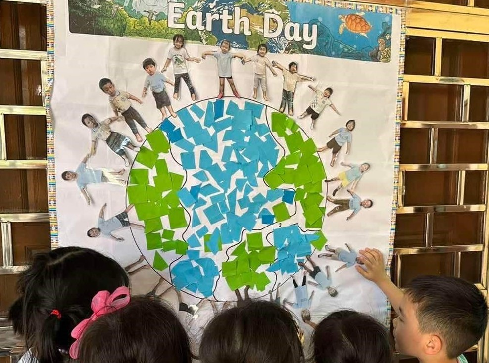
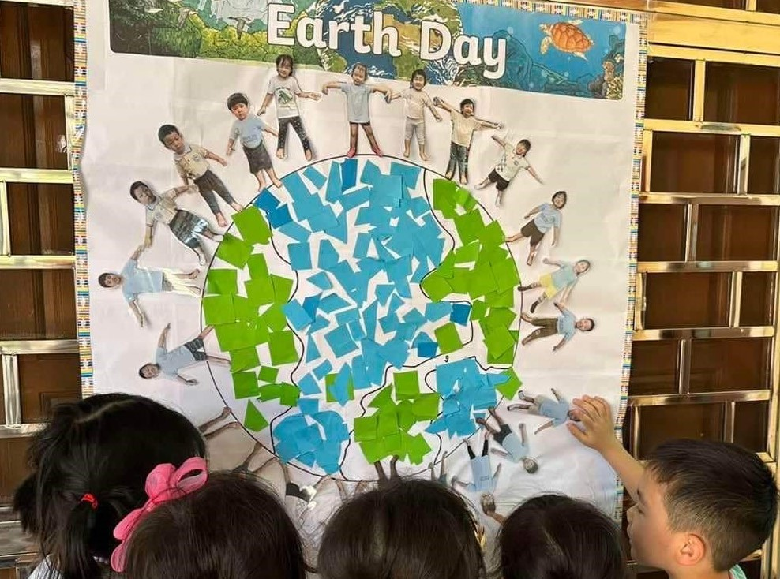
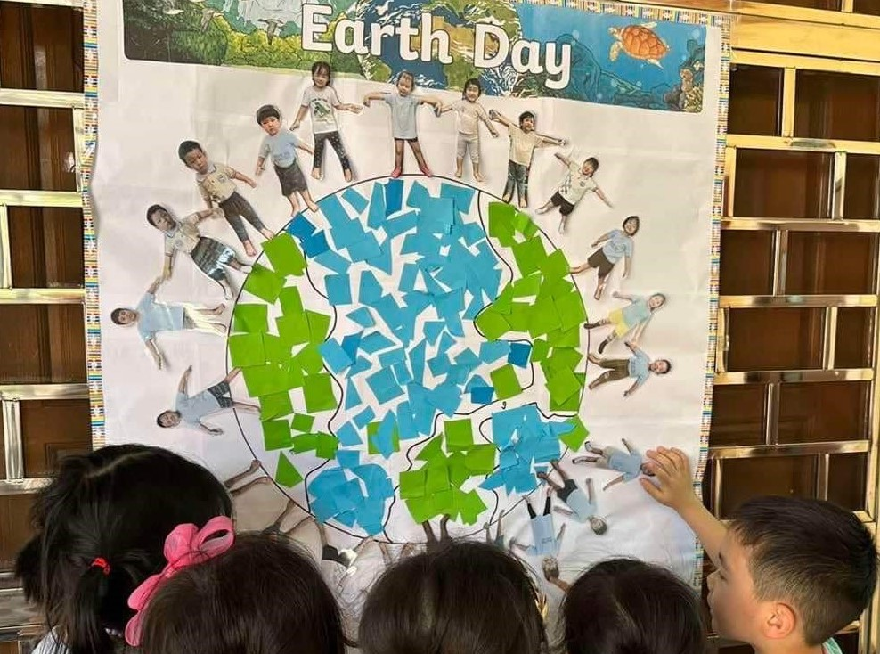
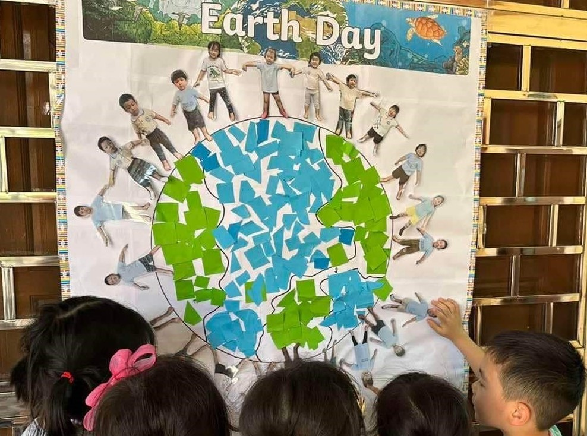

.jpg)

.jpg)

.jpg) 

There are many programs that you can learn.
The Bright Star Class is designed to help toddlers to socialize with peers with the help of caregivers and family as well as to have the confidence to try new things and explore their environment.
The Morning Star class is designed to offer exploration opportunities and social play with classmates, which will lay the foundation for future academic success.
The Sunflower class promotes letter recognition and phonemic awareness through a thematic approach that introduces children to alphabet letters using appropriate multisensory activities. Number sense is cultivated through multisensory activities, movement, and play.
The lighthouse class is designed to emphasize phonemic awareness and alphabet recognition to build reading readiness skills. Valuable life skills will also ensure students to have a successful and positive foundation for all future learning.
Dream Tree International School organises monthly events where all of the students can participate. These events help the students to discover their talents. It is always a happy and memorable moment to participate in these events.


Dream Tree International School offers well-equipped classrooms with comfortable seating and modern libraries. CCTV surveillance system, fire prevention system, and deployment of security personnel are among the several safety and security measures taken by the School to ensure a safe campus environment.

Our library has a large range of fiction, non-fiction, and picture story books. Children are encouraged to make full use of these facilities in order to foster a healthy reading habit.


There are adventure playgrounds which are challenging and safe play environments for children of all ages and abilities.

School Classrooms essentially make the focal study space for students to maintain healthy learning environment with proper standards of classroom ventilation, lighting, and technological support.
The dates listed below are subjects to be changed during the academic year.

This is the class schedule we use at school.
My two kids have been attending Dream Tree for almost two years. Dream Tree has truly enriched my family's stay in Myanmar, which otherwise would have been very bumpy especially in this difficult times. I would say that this school runs on American curriculum, with Korean discipline and Myanmar kindness. You cannot wish for anything better in Yangon. As a very picky and choosy father, I would highly recommend Dream Tree as "the one and only place" to anyone with children between the age of 18 months ~ 6 years.
Sending your child here is the best choice. This place is very clean and the quality of education is very high. Both the teacher and the owner have long experience and love children very much.
When finding preschool for my son, I visited many famous preschools in yangon and I found Dream Tree school. This school is very clean and well maintained. When I talk with the school director and principal, I found that they care all the children like their own. They trained their children manners and good habits. Their teachers and staffs are very good at their jobs. My son just finished preschool and I was so pleased that what Dream Tree School had taught him in these years. Thank you Dream Tree school team for their efforts.
It is a great school and best educational environment for your kids. The rooms are so clean , the meals they feed the kids are healthy and the teachers are kind and good at teaching. I highly recommend it.
I am very grateful to Dream Tree International School for educating my son and daughter. They have patient teachers, a good teaching environment, and delicious lunch and snack. All students can do a lot of activities at school. My son and daughter are very happy to go to school every day. They have received good learning opportunities in all aspects.
Ponnami goes to this kindergarten, and it's excellent! The teachers take great care of the kids and help them grow emotionally, mentally, and in their language and science skills. The school makes sure the kids get well-rounded nutrition and teaches them to eat a variety of foods. They also train the kids to do basic chores by themselves. We are very happy with the school!
Very solid American curriculum designed by American Teachers; Kids can prepare up to 3rd grade primary by following this curriculum. Nowhere else in yangon can equip our kids up to this level. I am amazed how teachers can teach such complicated topics while maintaining fun class environment. Kids love to go to school. Teachers have great backgrounds(eg ex lawyers, degree from UK/Australia/Simgapore, etc.) Clean classroom with good hygiene and toys from Korea Differentiated service for parents, especially working moms: No need to pack food early morning(school provides nutritious meals- my son always eats 2-3 more times), school bus, fun school events for family, reasonable fee, etc.
It is with great pleasure that I write this letter of recommendation for Dream Tree Preschool. Both of my sons, who are now 9 and 5, have been a part of the Dream Tree family, and our experience has been nothing short of exceptional. Our older son, who is turning 9, began his journey at Dream Tree when he was just 4 years old. Even after joining a larger school at age 5, he has eagerly returned to Dream Tree every summer for additional English classes and fun activities. This consistent desire to return speaks volumes about the positive impact Dream Tree has had on him. Our younger son, who is turning 6, is currently attending Dream Tree, and we are reluctant to leave such a nurturing and supportive environment. The school's unique approach to education goes beyond teaching English; it instills important values such as empathy, sharing, and mindfulness. These lessons are integrated into the curriculum, setting Dream Tree apart from other preschools in Yangon, which often focus solely on academic skills like poems and alphabets. Dream Tree has played a significant role in shaping our sons into the little gentlemen they are today. The emphasis on manners and emotional development has provided them with a strong foundation for their future. We are incredibly grateful to the dedicated staff at Dream Tree for their commitment to our children's growth and well-being. I wholeheartedly recommend Dream Tree Preschool to any parents seeking a holistic and enriching educational experience for their young children. The values and skills learned at Dream Tree will benefit them for a lifetime.
Wish you all the best with tremendous success. "Thank You DREAM TREE & ALL TEACHERS". Thaw Htoo Aung's coming to Dream Tree may be coming to an end. But, it is certain that Dream Tree will always remain in his heart and he will forever remember for the rest of his life. Thaw Htoo Aung loved his classmate as well as schoolmate and teachers. Needless to say, Thaw Htoo Aung has learned a lot and also earned better experience from Dream Tree. Thaw Htoo Aung has learned a lot from you all. We wish to thank you all for everything, creating a better place for wonderful time he had spent, at Dream Tree. of various dedicated teachers. It's been privileged to have attended Dream Tree School for Thaw Htoo Aung. He enjoyed going to school and loved to do so at all time. Thaw Htoo Aung has spent some years with Dream Tree under the supervision.
ကျမသား၃ နှစ်ခွဲမှာ ကျောင်းစတင်စုံစမ်းခဲ့ပါတယ်။ နံမယ်ကြီးကျောင်းတွေအများကြီးကို ကလေးနဲ့အတူသွားရောက်လေ့လာခဲ့ပါတယ်။ ကျောင်းတိုင်းမှာလိုအပ်ချက်အနည်းငယ်ရှိနေပါတယ်။ နောက်ဆုံးမှာ ကျမတို့ dream tree ကျောင်းကိုရောက်ခဲ့ပါတယ်။ director က ကျမတို့ကို အရင်ဆုံး စာသင်ခန်း ၊ toilet ခန်း ၊ ကစားကွင်း ၊ မီးဖိုချောင် အစရှိတဲ့အခန်းတွေကို လိုက်ပြပါတယ်။ ပြီးမှ ကျောင်းနဲ့ပက်သတ်တာတွေကိုရှင်းပြခဲ့ပါတယ်။ ကျောင်းအဆောက်အဦးထဲစဝင်တဲ့အချိန်မှာ ကျမအရင်ဆုံးခံစားရတာက နွေးထွေးမှုပါ။ မိဘရင်ခွင်ကနေ ခွဲပြီး ပထမဆုံးကျောင်းစတက်ရမယ့်ကလေးအတွက် နွေးထွေးမှုရှိတဲ့နေရာ ( ကျောင်း) ဖြစ်ဖို့က အရမ်းအရေးကြီးပါတယ်။ စာသင်ခန်းအားလုံးက ကလေးတွေကျောင်းတက်ခြင်အောင် ဆွဲဆောင်မှုရှိ။ ကျောင်းဆိုပြီးကြောက်လန့်မှုဖြစ်မနေပါဖူး။ ကလေးနဲ့သင့်တော်တဲ့ toilet လေးတွေ အခန်းတိုင်းမှာရှိနေပြီး ချစ်စရာကောင်းလှပါတယ်။ ကစားစရာနဲ့ ပစ္စည်းတွေအားလုံး ဖုန် တစက်မရှိ၊ အနံ့မရှိ အားလုံးသန့်ရှင်းသပ်ရပ် စည်းကမ်းတကျစီထားတာ တွေ့ရပါတယ်။ နုနယ်တဲ့ကလေးအတွက် သန့်ရှင်းမှုက အဓိကကျတဲ့အတွက် ကျမအလွန်သဘောကျမိပါတယ်။ ကျောင်းမှာ နေ့လည်စာစီစဉ်ပေးပါတဲ့ မီးဖိုခန်းက သန့်ရှင်းသပ်ရပ်နေပါတယ်။ အပေါ်ထပ်တက်လှေခါး ဟာ အခြားကျောင်းမှာရှိတဲ့လှေခါးထက်အန်တရာယ်ကင်းပါတယ်။ ဆရာမတွေရဲ့ကြင်နာ နွေးထွေးတဲ့မျက်နှာကိုလည်း ကျမတွေ့ရပါတယ်။ အားလုံးကိုကြည့်ပြီး ကျမစိတ်ကျေနပ်မှု အပြည့်အဝရခဲ့ပါတယ်။ ကျောင်းအားလုံးကြည့်ပြီးအိမ်ပြန်တဲ့လမ်းမှာ သားဘယ်ကျောင်းတက်မလဲမေးတော့ dream tree ပဲတက်ခြင်တယ်လို့ပြောပါတယ်။ နောက်ဆုံးမှာတော့ dream tree ကိုရွေးခြယ်ခဲ့ပါတယ်။ ကျမ သားလေးဟာ ၃ နှစ်ခွဲထိ အိမ်မှာထမင်းကိုချေကျွေးရပါတယ်။ ထို့ကြောင့် ကျောင်းထမင်းကို ကောင်းကောင်းစားပါ့မလားလို့ စိုးရိမ်ခဲ့ရပါတယ်။ tr က ထမင်းကို ဘယ်လိုဝါးစားရမယ်လို့စိတ်ရှည်စွာသင်ပြပေးမှုကြောင့် ထမင်းကိုကောင်းစွာဝါးစားနိုင်ခဲ့ပါတယ်။ ကျောင်းတက်နေတဲ့ကာလတလျောက်လုံးမှာ ကလေးအတွက် စိုးရိမ်ပူပန်မှု လုံးဝမရှိပဲ မိသားစုအိမ်မှာအပ်ထားသကဲ့သို့ ယုံကြည်စိတ်ချမှုရရှိစေခဲ့ပါတယ်။ ဆရာမများရဲ့ သင်ကြားရေးပိုင်းမှာလဲ စိတ်ကျေနပ်မှု အပြည့်အဝရရှိခဲ့ပါတယ်။ ကလေးတယောက်အတွက် ကနဦးကျောင်းတက်ချိန်မှာ ပျော်ရွှင်မှုရဖို့ အရေးအကြီးဆုံးဖြစ်ပါတယ်။ သားကတော့ ပျော်ရွှင်မှုကို dream tree ကျောင်းမှာ အပြည့်အဝရရှိခဲ့ပါတယ်။ သားအတွက် dream tree ကျောင်းကိုရွေးခြယ်ခဲ့တဲ့ ကျမဂုဏ်ယူမိပါတယ်။ Dreamtree ကျောင်း လေးက သားရဲ့ငယ်ဘဝအတွက်ရော ကျမတို့မိသားစုအတွက်ရော ရင်ထဲမှာ အမှတ်တရဖြစ်နေမယ့်ကျောင်းလေးပါပဲရှင်။ Dreamtree ကျောင်းမှ ဒါရိုက်တာ၊ ကျောင်းအုပ်၊ ဆရာမများအားလုံး နှင် အခြားဝန်ထမ်းများအားလုံးကို ကျေးဇူးအထူးတင်ပါတယ်ရှင်။
안녕하세요~ 7살 준우 엄마입니다. 부모를 따라 미얀마에 와서 영어라고는 'Hello'밖에 모르던 준우를 사랑으로 잘 가르쳐줘에서, 준우가 학교에 입학하게 되었네요. 불교의 땅에서도, 믿고 맡길 수 있는 좋은 선생님들과 교육기관이 있다는 것이 얼마나 큰 감사의 제목이었는지 모됩니다. 믿음 안에서 사랑으로 교육하시며, 미얀마 땅에서 아이들에게 복음을 신으시는 두분 선생님들께도 감사와 존경의 마음을 전합니다. 앞으로 하나님께서 두 분을 통해, Dream tree 통해 이뤄가실 많은 일들을 기대하고 또 축복합니다♡ 멀리서도 계속 기도할께요~ 감사합니다
처음 입학할 때 알파벳 밖에 몰랐던 쌍둥이들이 드림트리스쿨에 다니며 원하는 표현을 자유롭게 할 수 있을 정도로 영어 실력이 크게 향상되었습니다. 드림트리스쿨 교사들은 아이들 한 명 한 명을 정성껏 케어하며, 영어, 수학, 과학과 같은 교과 교육 뿐 아니라 생활 습관이나 태도 교육에도 최선을 다합니다. 드림트리스쿨 덕분에 아이들이 낯선 해외 생활에 잘 적응하며 즐겁게 지내고 있어 매우 만족합니다.
亲爱的 DREAM TREE INTERNATIONAL SCHOOL 团队: 您们好! 我们是Chole (杨珺淇)的家长,我们深感荣幸和欣慰,孩子在您们的幼儿园里度过 了如此快乐而充实的时光。 首先,我们要对您们每一位老师表示衷心的感谢,您们用爱心、耐心和专业精神, 为孩子营造了一个温馨、和谐、积极向上的学习环境。在您们的悉心指导下,孩子不仅 学到了知识,更重要的是学会了如何与人相处,如何表达自己的情感和需求。 在DREAM TREE INTERNATIONAL SCHOOL,孩子每天都能接触到丰富多彩的活动和游 戏,这不仅锻炼了她的身体素质,也激发了她的创造力和想象力。我们注意到,孩子在 参加这些活动后,变得更加自信、开朗,也更加愿意与他人分享自己的快乐和收获。 此外,我们还要特别感谢您们对孩子的关爱和照顾,您们不仅关注孩子的学习,更 关心她的生活和健康,每次接送孩子时,我们都能感受到您们亲切的微笑和关心的询问。 这让我们倍感温暖,也让我们更加信任您们的专业能力, 最后,我们要再次向您们表示衷心的感谢和崇高的敬意,感谢您们为孩子的成长付 出的辛勤努力和无私奉献,我们相信,在你您们的精心培育下,孩子一定会茁壮成长, 成为社会的栋梁之才。 祝愿 DREAM TREE INTERNATIONAL SCHOOL 越办越好,为更多的孩子带来快乐和成长| 此致 敬礼!